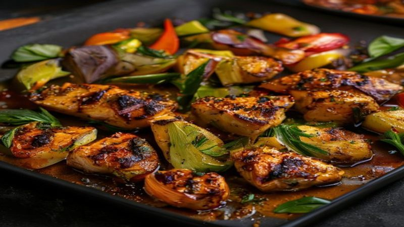

Sheet Pan Honey Garlic Chicken and Veggies
This Sheet Pan Honey Garlic Chicken with roasted vegetables is an easy one-pan dinner! Sticky, sweet, and savory chicken thighs with perfectly roasted broccoli and sweet potatoes.
Ingredients
- 1.5 lbs boneless chicken thighs
- 2 cups broccoli florets
- 2 medium sweet potatoes, cubed
- 1 red bell pepper, chopped
- 3 tablespoons honey
- 3 tablespoons soy sauce
- 4 cloves garlic, minced
- 1 tablespoon olive oil
- 1 teaspoon sesame oil
- 1 tablespoon cornstarch
- Sesame seeds and green onions for garnish
Instructions
Sheet pan dinners are the ultimate weeknight hack — everything cooks together on one pan with almost no cleanup! This honey garlic version is sticky, savory, and absolutely irresistible.
Preheat your oven to 425°F (220°C) and line a large sheet pan with parchment paper.
Whisk together the honey, soy sauce, minced garlic, olive oil, sesame oil, and cornstarch in a bowl. This sauce caramelizes beautifully in the oven!
Toss the cubed sweet potatoes in half the sauce and spread them on the sheet pan. Roast for 10 minutes while you prep the rest.
Add the chicken thighs to the remaining sauce and coat well. After the sweet potatoes have had a head start, add the chicken, broccoli, and bell pepper to the pan.
Roast for 20-25 minutes until the chicken reaches 165°F (74°C) and the vegetables are tender and slightly charred. The sauce will become sticky and caramelized.
Let everything rest for 5 minutes on the pan. The sauce will thicken up even more as it cools slightly.
Serve over steamed rice or quinoa. Garnish with sesame seeds and sliced green onions for that restaurant finish.
One pan, minimal cleanup, maximum flavor — that's the sheet pan dinner promise! This honey garlic chicken is perfect for meal prep too. Just portion it out for easy lunches all week.
Recommended Kitchen Essentials
Every great recipe starts with great tools. Here are our top picks to make cooking easier and more enjoyable:
Support Quick Bites Kitchen — When you purchase through our links, we may earn a small commission at no extra cost to you. This helps us keep creating free recipes for everyone. Thank you!